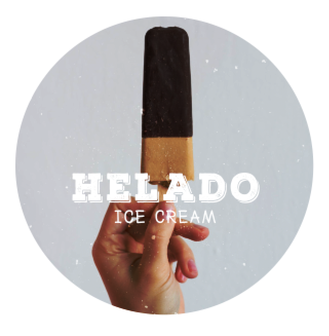
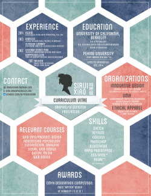
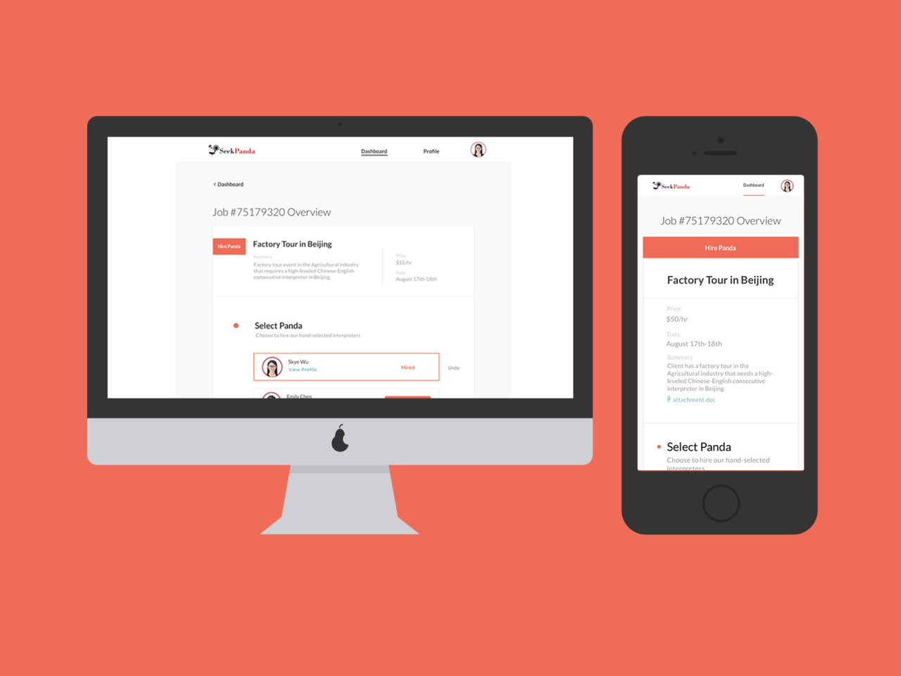

Coming from a Psychology and Interdisciplinary Studies background, I believe in designing with dual-empathy - that simple, intuitive, and effective design comes from aligning customer needs with the business goals of a company. Having worked at multiple start-up companies, I'm used to converting broad, conceptual ideas into simple, intuitive designs, collaborating closely with PMs and developers both online and offline, as well as meeting tight deadlines through rapid prototyping.


